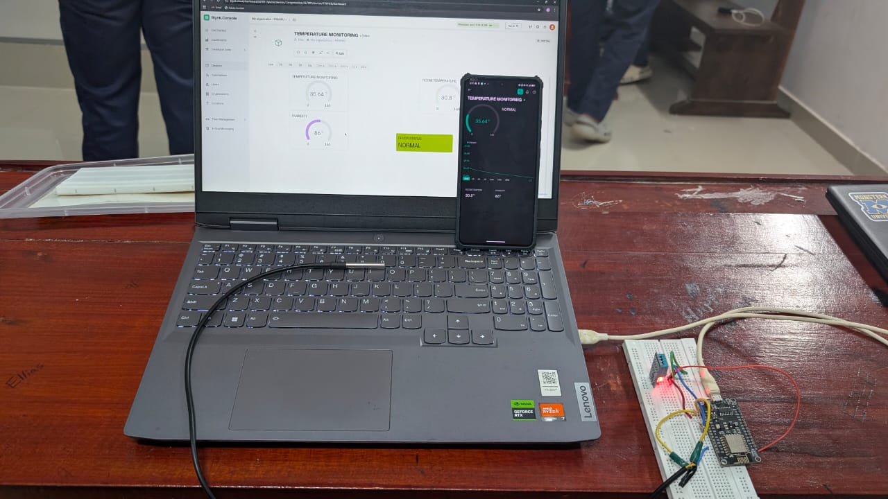
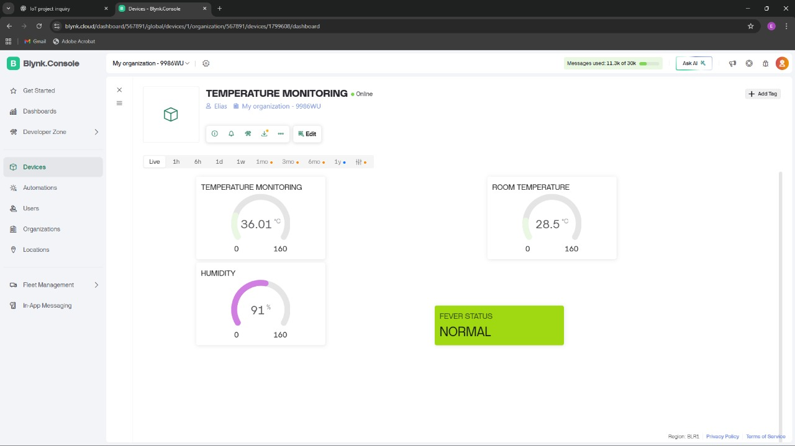

Real-Time Temperature Measurement
Overview
This project implements a real-time temperature measurement system using a microcontroller and temperature sensor. The system continuously monitors temperature variations and provides live readings for analysis and monitoring.
Problem Statement
Accurate temperature monitoring is essential in applications such as environmental monitoring, electronics safety, and industrial systems. Conventional solutions often lack real-time visibility or rely on expensive equipment.
Solution
A temperature sensor is interfaced with a microcontroller to capture temperature data at regular intervals. The readings are processed in real time and displayed locally and remotely for continuous monitoring.
Working Principle
The temperature sensor generates an electrical signal proportional to the surrounding temperature. The microcontroller reads this signal, converts it into a temperature value, and updates the output in real time.
Technologies Used
- Microcontroller (Arduino / ESP)
- Temperature Sensor
- Embedded C
- Analog & Digital Electronics
Circuit Diagram

The circuit consists of a temperature sensor connected to a microcontroller. The sensor output is processed and converted into temperature values, enabling continuous real-time monitoring.
Real-Time Dashboard
This dashboard provides live visualization of temperature and humidity data transmitted from the sensor node to the Blynk Cloud platform. It displays body temperature, ambient room temperature, and humidity using gauge widgets, along with a status indicator for quick interpretation of readings.
Why This Project Matters
This project strengthened my understanding of sensor interfacing, real-time data acquisition, and embedded system design. It demonstrates how reliable sensing plays a critical role in real-world applications.
Future Improvements
The system can be extended by adding wireless communication, cloud-based data logging, mobile alerts, and multi-sensor integration for large-scale monitoring.